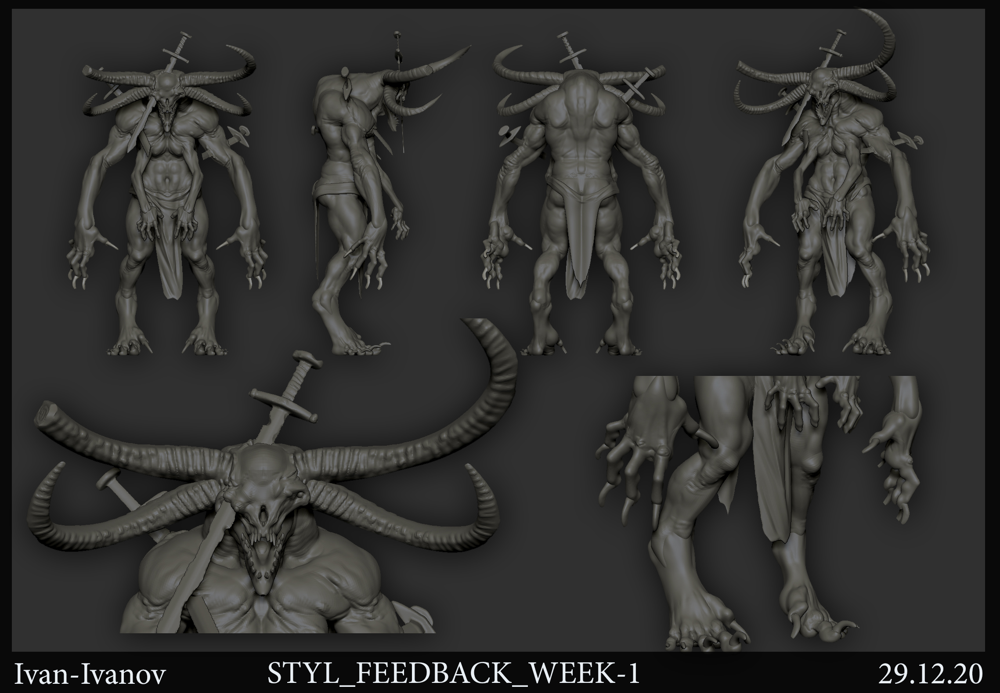
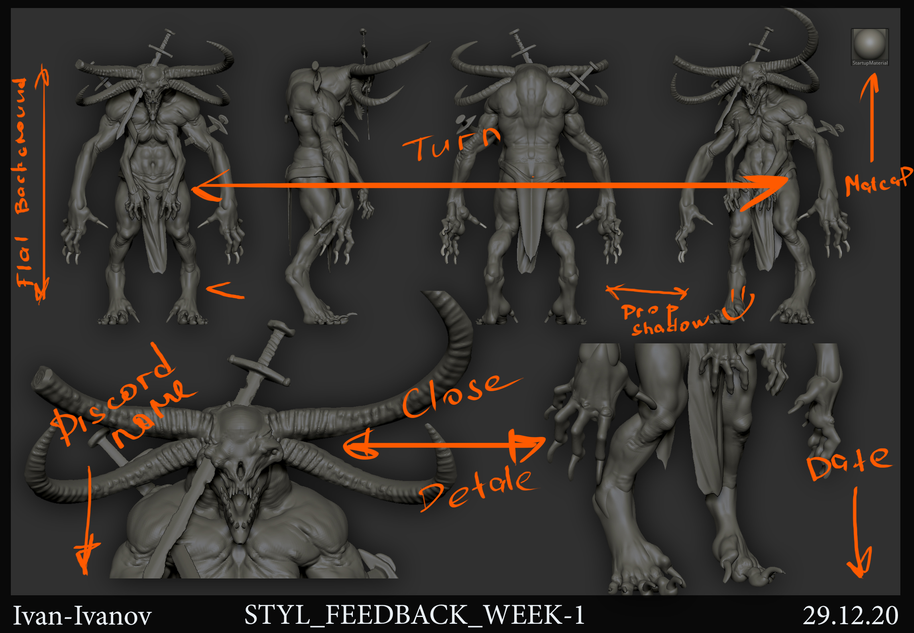

3. Домашняя работа
Если ты посмотрел обе лекции раздела, сделай второй рид по всему скульпту, углубись в его дизайн.
1. 2D скриншоты, оформленные согласно примеру ниже. Там же ты найдешь matcap Николая


ЧЕКЛИСТ 2 РИД:
1. Работа доведена до второго рида
2. Внутренняя детализация и сегментация смотрится гармонично и работает с первым ридом
3. Все элементы обвеса имеют обоснованную форму и структуру - толщины выдержаны, эджи расставлены
4. Обвес чист и аккуратен
5. Инсеты на пересечении объектов обработаны и клипинг удержан на минимальном уровне
6. Обмотки и кожаные элементы обработаны с помощью указанной в лекции техники
7. На модели присутствует пример использования IMM (инсерт браши)